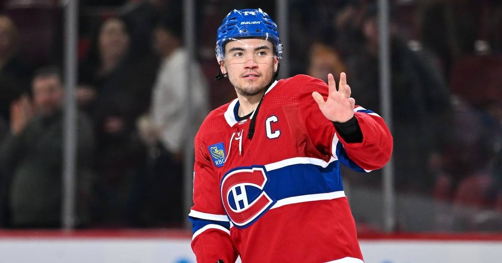

2-Leg Parlay (about +257): Spurs -5.5 + Canadiens Moneyline
Two plays, one story: the league's hottest big man against a shorthanded backcourt, and the East's hottest team at a coin-flip price. Together they pay about +257.

The legs
Leg 1 — San Antonio Spurs -5.5 (-110)
San Antonio Spurs at Portland Trail Blazers, 10:00 PM ET. Portland is down Ja Morant, Shaedon Sharpe, and Vit Krejci on the second night of a back-to-back, and Victor Wembanyama has scored 82 points in his last two games — 52 against Dallas on Wednesday, 30 against Sacramento on Friday. The Blazers just spent Friday night chasing the Lakers around Los Angeles. The Spurs are the better, healthier team, and the line has already moved from -4.5 to -5.5.
Leg 2 — Montreal Canadiens moneyline (-115)
Montreal Canadiens at Toronto Maple Leafs, 7:00 PM ET. The Canadiens are 10-3-3, have won six of seven and four straight over Toronto, and start Jacob Fowler (7-1-1, .925 save percentage). The Leafs have lost three of four and are held below 30 shots a night lately. Tavares is expected back for Toronto, but one player returning from three weeks out doesn't close the gap at a coin-flip price.
Why these two together
Both legs are bets on the better, healthier team — and both are priced like coin flips. The Spurs need to beat a shorthanded team by six. The Canadiens need to beat a slumping team straight up. Neither asks for a miracle. Put them together and the price jumps to about +257 — a $10 ticket returns about $35.70 — which is the whole point: two solid reads, one ticket.
The honest caveat
Parlays multiply risk, not just payout. The Spurs are laying points on the road on a back-to-back, and Wembanyama rolled his ankle Friday — he finished the game, but if he is limited, leg one is in trouble. The Canadiens are the better team, but the Leafs are rested, at home, on a Saturday night, with their captain back. Either leg can lose on its own. That is why the price is +257 and not -257. Bet it as a fun ticket on two good reads, not as a mortgage payment.
The pick
2-leg parlay, about +257: San Antonio Spurs -5.5 (-110) + Montreal Canadiens moneyline (-115). The hottest big man in the league and the hottest team in the East, both at fair prices. That is the bet.
If you or someone you know has a gambling problem, call 1-800-GAMBLER.
Sources
• NBA Predictions, Odds and Betting Lines - November 7 (FanDuel Research)
• NBA Odds: Spreads, Totals & Moneylines (Gridiron & Wine)
• Tavares expected to rejoin Maple Leafs lineup against Canadiens on Saturday (NHL.com)